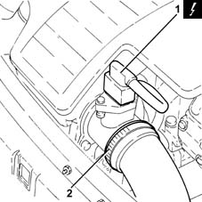
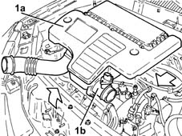
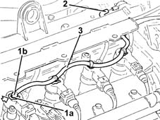

1060F52 Fuel return PIPE from INJECTORS - R.R.
- Path
- Procedures > 10 ENGINE > 1060 DIESEL FUEL INJECTION > 1060F injectors and lines > 1060F52 Fuel return PIPE from INJECTORS - R.R.
- Kind
- repair procedure (removal / refitting; the operation number is the code)
- Applies to
- engines: 1.3 JTD; all production periods
- Interactive page
- https://sloeber94.github.io/elrnDB-lYpsln/en/#/2429044
Applies to: engines: 1.3 JTD; all production periods
 Removing
Removing
 Refitting
RefittingEnsure that the ignition key is in OFF position, then disconnect the battery negative terminal (-).
 | Name | Connector |
|---|---|---|
- | Battery |
1. Disconnect the electrical connection from the air flow meter.
| Name | Connector |
|---|---|---|
1 | Air flow meter |
2. Loosen the band and disconnect the the turbocharger air inlet sleeve from the rigid pipe, air flow meter side.

Applies to: engines: 1.3 JTD; all production periods
1. Remove the air filter (1a) complete with air flow meter (1b) by releasing from the underlying pins and then from the rear fastenings.

Applies to: engines: 1.3 JTD; all production periods
1. Push the clips (1a) by hand and disconnect the fuel return pipe from the fuel injectors (1b), injector side.
2. Disconnect the fuel return pipe from the fuel injectors, single fuel manifold pipe side.
3. Release the fuel return pipe from the fuel injectors from the fixing band and remove it.

Applies to: engines: 1.3 JTD; all production periods
Refitting
RemovingRefit the fuel return pipe from the injectors in its seating and secure it with its band.
Connect the fuel return pipe from the fuel injectors, single fuel manifold pipe side.
Connect the fuel return pipe from the fuel injectors, fuel injectors side, pushing it until the clips can be heard clicking into place.
Replace the air filter, complete with air flow meter, in its housing.
Connect the air intake sleeve to the turbocharger, air flow meter side, and tighten the band.
Connect the electrical connection to the air flow meter.
Connect the negative (-) battery terminal.